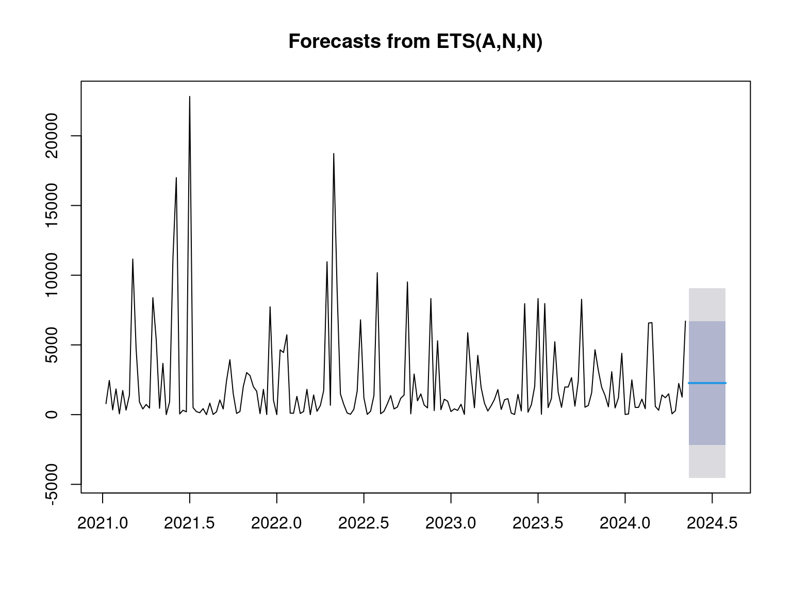
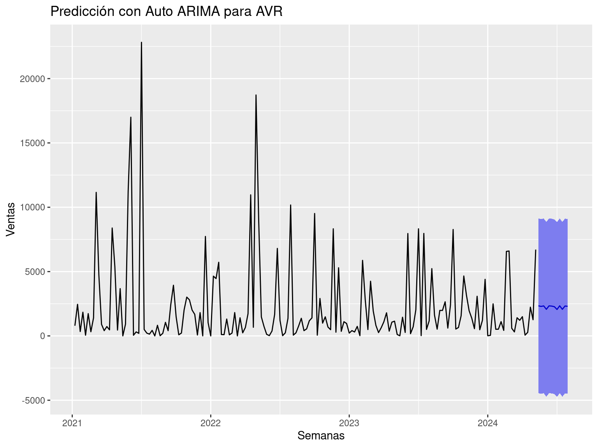
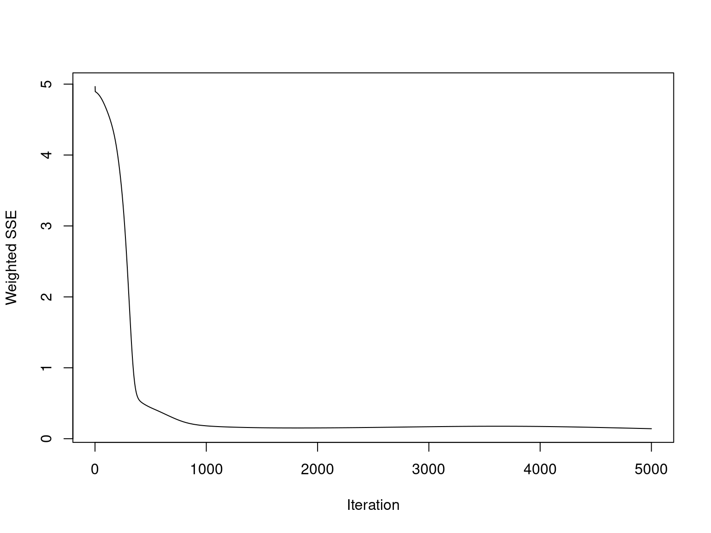

Actividad 4 Modelo de pronostico - Holt Winters
4.1 Suavizado exponecial (Holt - Winter)
Se aplicó el modelo de Holt-Winters a los conjuntos de datos AVR, Line UPS, Online UPS y Storage Battery, para realizar un ajuste que permita capturar tendencias y estacionariedades.
4.1.1 AVR
El modelo sigue razonablemente las fluctuaciones de la serie de tiempo, aunque tiene dificultades para ajustar algunos picos abruptos, especialmente en 2023. Esto es común cuando existen variaciones drásticas en los datos, ya que el modelo Holt-Winters tiene ciertas limitaciones en la captura de picos extremos.
# Suavizamiento exponencial
HW_AVR <- HoltWinters(AVR_ts)
# Visualizar el suavizamiento
plot(HW_AVR)
4.1.2 Line UPS
El modelo captura bien la variabilidad y los patrones estacionales, aunque hay algunos desajustes en ciertos picos y valles.
# Suavizamiento exponencial
HW_Line_UPS <- HoltWinters(Line_UPS_ts)
# Visualizar el suavizamiento
plot(HW_Line_UPS)
4.1.3 Online UPS
El modelo se ajusta bastante bien a las fluctuaciones, capturando tanto la tendencia como la estacionariedad. Sin embargo, como en los otros casos, pierde precisión en los picos más pronunciados
# Suavizamiento exponencial
HW_Online_UPS <- HoltWinters(Online_UPS_ts)
# Visualizar el suavizamiento
plot(HW_Online_UPS)

4.2 Prediccion
4.2.1 AVR
## Point Forecast Lo 80 Hi 80 Lo 95 Hi 95
## 2024.365 41.19232 -4286.0648 4368.449 -6576.7763 6659.161
## 2024.385 849.93266 -3477.3244 5177.190 -5768.0359 7467.901
## 2024.404 -173.43742 -4500.6945 4153.820 -6791.4060 6444.531
## 2024.423 5282.41748 955.1604 9609.675 -1335.5511 11900.386
## 2024.442 -174.97486 -4502.2319 4152.282 -6792.9434 6442.994
## 2024.462 584.40235 -3742.8547 4911.659 -6033.5662 7202.371
## 2024.481 2997.66301 -1329.5941 7324.920 -3620.3056 9615.632
## 2024.500 5889.22933 1561.9723 10216.486 -728.7393 12507.198
## 2024.519 -352.23465 -4679.4917 3975.022 -6970.2032 6265.734
## 2024.538 5333.34083 1006.0838 9660.598 -1284.6278 11951.309
## 2024.558 226.62297 -4100.6341 4553.880 -6391.3456 6844.592
## 2024.577 2516.25992 -1810.9971 6843.517 -4101.7087 9134.229## ME RMSE MAE MPE MAPE MASE
## Training set -10.51627 3362.726 2031.977 -597.4377 686.9351 0.7053149
## ACF1
## Training set 0.09064362
4.2.2 Line UPS
## Point Forecast Lo 80 Hi 80 Lo 95 Hi 95
## 2024.365 2395.203 -585.2597 5375.666 -2163.02140 6953.428
## 2024.385 6497.811 3516.7642 9478.857 1938.69340 11056.928
## 2024.404 2021.085 -960.6799 5002.849 -2539.13067 6581.300
## 2024.423 7982.851 5000.2207 10965.481 3421.31173 12544.390
## 2024.442 1763.836 -1219.8212 4747.493 -2799.27394 6326.946
## 2024.462 2757.711 -227.1481 5742.571 -1807.23730 7322.660
## 2024.481 7225.341 4239.0909 10211.592 2658.26534 11792.418
## 2024.500 4319.481 1331.6375 7307.325 -250.03160 8888.995
## 2024.519 1549.193 -1440.4608 4538.846 -3023.08766 6121.473
## 2024.538 6050.868 3059.1764 9042.560 1475.47037 10626.266
## 2024.558 4626.535 1632.5616 7620.508 47.64785 9205.422
## 2024.577 6198.071 3201.5611 9194.582 1615.30429 10780.839## ME RMSE MAE MPE MAPE MASE ACF1
## Training set 166.8915 2322.122 1699.773 -Inf Inf 0.7570958 -0.104764
4.2.3 Prediccion Online UPS
## Point Forecast Lo 80 Hi 80 Lo 95 Hi 95
## 2024.365 151.6897 -6.253334 309.6327 -89.863305 393.2426
## 2024.385 312.4971 154.554145 470.4401 70.944174 554.0501
## 2024.404 175.7021 17.759067 333.6451 -65.850904 417.2550
## 2024.423 269.0596 111.116611 427.0026 27.506640 510.6126
## 2024.442 137.4596 -20.483385 295.4026 -104.093355 379.0126
## 2024.462 287.5091 129.566101 445.4521 45.956130 529.0621
## 2024.481 231.9891 74.046138 389.9321 -9.563833 473.5421
## 2024.500 334.9109 176.967899 492.8539 93.357928 576.4639
## 2024.519 163.5365 5.593497 321.4795 -78.016474 405.0895
## 2024.538 261.9819 104.038944 419.9249 20.428974 503.5349
## 2024.558 280.1952 122.252189 438.1382 38.642219 521.7481
## 2024.577 381.3215 223.378466 539.2645 139.768496 622.8744## ME RMSE MAE MPE MAPE MASE ACF1
## Training set 8.597932 123.0382 90.70832 -Inf Inf 0.8306248 -0.05999268
4.2.4 Prediccion Storage Battery
## Point Forecast Lo 80 Hi 80 Lo 95 Hi 95
## 2024.365 1713.041 -34.32930 3460.411 -959.33117 4385.413
## 2024.385 2244.157 496.22477 3992.090 -429.07475 4917.389
## 2024.404 1252.645 -495.84996 3001.139 -1421.44704 3926.736
## 2024.423 1603.512 -145.54396 3352.569 -1071.43849 4278.463
## 2024.442 1572.519 -177.09965 3322.137 -1103.29156 4248.329
## 2024.462 2460.562 710.38227 4210.742 -216.10691 5137.231
## 2024.481 3856.245 2105.50392 5606.986 1178.71757 6533.772
## 2024.500 1818.996 67.69353 3570.298 -859.38990 4497.382
## 2024.519 2640.096 888.23229 4391.959 -39.14813 5319.339
## 2024.538 1966.975 214.55038 3719.399 -713.12693 4647.076
## 2024.558 2018.323 265.33853 3771.308 -662.63557 4699.282
## 2024.577 1626.913 -126.63268 3380.458 -1054.90348 4308.729## ME RMSE MAE MPE MAPE MASE ACF1
## Training set 118.4842 1363.04 972.5784 -Inf Inf 0.8740217 0.05918401
4.2.5 Conclusión
Nuestros valores de MAPE (Mean Absolute Percentage Error) son extremadamente altos y sugiriendo que el modelo de pronóstico tiene un desempeño muy deficiente.
La MAPE se expresa como un porcentaje y mide el error absoluto medio en relación con los valores reales. lo que nos indica que que errores de pronóstico son mucho mayores que los valores reales.
Si el valor real es cero en algún punto, el cálculo del MAPE se vuelve problemático, ya que implica dividir por cero. Por esta razon el modelo de Holt-Winters no es adecuado para el pronostico de ventas de nuestra base de datos.